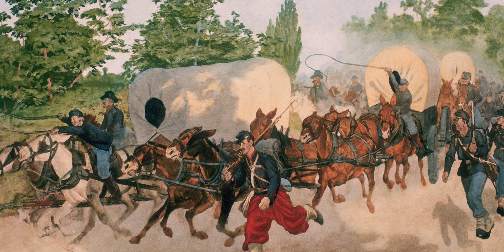
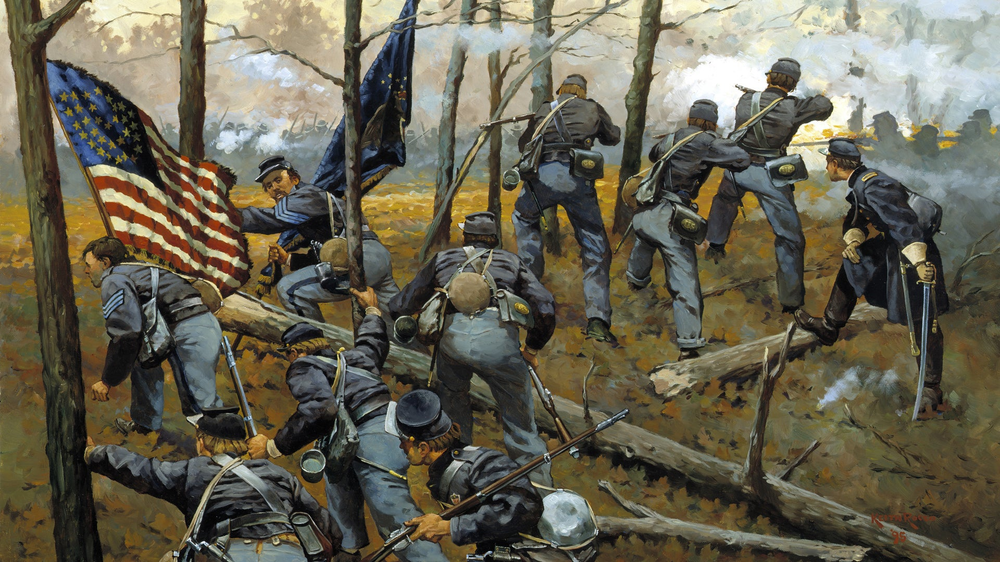

The Battle of Gettysburg
Fought from July 1 to July 3, 1863, the Battle of Gettysburg is considered the most important engagement of the American Civil War.
After a great victory over Union forces at Chancellorsville, General Robert E. Lee marched his Army of Northern Virginia into Pennsylvania in late June 1863. On July 1, the advancing Confederates clashed with the Union’s Army of the Potomac, commanded by General George G. Meade, at the crossroads town of Gettysburg.
The next day saw even heavier fighting, as the Confederates attacked the Federals on both the left and right. On July 3, Lee ordered an attack by fewer than 15,000 troops on the enemy’s center at Cemetery Ridge. The assault, known as “Pickett’s Charge,” managed to pierce the Union lines but eventually failed at the cost of thousands of rebel casualties. Lee was forced to withdraw his battered army toward Virginia on July 4.
The Union had won in a major turning point, stopping Lee’s invasion of the North. It inspired Lincoln’s “Gettysburg Address,” which became one of the most famous speeches of all time.

Battle of Vicksburg
The Battle of Vicksburg was a decisive Union victory during the American Civil War that divided the Confederacy and cemented the reputation of Union General Ulysses S. Grant. Union forces waged a campaign to take the Confederate stronghold of Vicksburg, Mississippi, which lay halfway between Memphis to the north and New Orleans to the south. The 47-day Siege of Vicksburg eventually gave control of the Mississippi River—a critical supply line—to the Union, and was part of the Union’s successful Anaconda Plan to cut off all trade to the Confederacy.

Battle of Bull Run
The First Battle of Bull Run, also known as the Battle of Manassas, marked the first major land battle of the American Civil War. On July 21, 1861, Union and Confederate armies clashed near Manassas Junction, Virginia. The engagement began when about 35,000 Union troops marched from the federal capital in Washington, D.C. to strike a Confederate force of 20,000 along a small river known as Bull Run. After fighting on the defensive for most of the day, the rebels rallied and were able to break the Union right flank, sending the Federals into a chaotic retreat towards Washington. The Confederate victory gave the South a surge of confidence and shocked many in the North, who realized the war would not be won as easily as they had hoped.

Battle of Shiloh
The Battle of Shiloh, also known as the Battle of Pittsburg Landing, took place from April 6 to April 7, 1862, and was one of the major early engagements of the American Civil War. The battle began when the Confederate Army launched a surprise attack on Union forces under General Ulysses S. Grant in southwestern Tennessee. After initial successes, the Confederates were unable to hold their positions and were forced back, resulting in a Union victory. Both sides suffered heavy losses, with more than 23,000 total casualties, and the level of carnage shocked North and South alike.